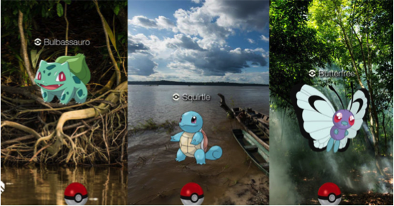

2016: não foi um ano para amadores
09 de Janeiro de 2017 às 07:00
2016 foi intenso. O país em recessão econômica, com uma situação política volátil gerada pelo maior esquema de corrupção do mundo e uma profunda crise de valores. Além disso, como pano de fundo vivemos em uma era de grandes transformações: mudanças tecnológicas, de modelos de desenvolvimento e estruturas de poder.
É neste contexto, que você e seus colegas, bravos profissionais do terceiro setor, estão tentando engajar pessoas para apoiarem causas relevantes que farão do nosso país um local melhor para se viver. Parece missão impossível, né? Mas não é.
Conversei com quatro excelentes profissionais do setor sobre suas ações de comunicação neste ano e eles, com base em suas experiências compartilharam o que funcionou. Aqui vão os achados:
Ações coordenadas
Tanto a Paula Piccin do Ipê, como o Daniel Assad do Greenpeace e Rodrigo Zavala das Aldeias Infantis explicaram que as ações de comunicação acontecem de forma coordenada com as áreas de captação e mobilização, e isso foi parte do sucesso das campanhas que conduziram no ano.
O Ipê é uma das organizações apoiadas pelo Instituto Arredondar, que tem o sistema de microdoações via arredondamento dos centavos de compras em lojas credenciadas. Paula relatou sobre as ações de comunicação que realizaram junto com o parceiro para garantir o sucesso de arrecadação. Foram não só ações com os consumidores finais mas também com os vendedores, em que o Ipê foi até as lojas para explicar o que era a organização, pois eles são chaves para engajar o consumidor final para a doação. Com isso, devem fechar o ano com R$90 mil arrecadado com as microdoações.
No caso do Greenpeace foi a combinação de ações on-line/off-line e ciberativismo/doação. A campanha exitosa do ano foi contra a construção da usina hidrelétrica de Tapajós e em prol dos direitos dos povos indígenas de Munduruku. “Foram diversos pontos de comunicação, com mensagens consistentes, junto ao poder-público, empresas e público em geral”. Tamanho esforço angariou mais de 1,3 milhões de assinaturas em petição on-line, barrou a construção da usina e a atingiu a meta de arrecadação para a campanha. Agora a luta segue pela demarcação das terras indígenas.
A Aldeias Infantis conduziu neste ano um processo extenso e intenso de planejamento e alinhamento institucional. Rodrigo Zavala, conclui raciono “não dá para tratar de uma forma separada a comunicação e captação, pois tudo é engajamento.”
Promoção da Causa
Leandro Machado, da Cause foi categórico “É sempre mais efetivo divulgar a causa do que a organização”. Ele explica que muitas organizações focam sua comunicação em dizer o que faz, mas “a causa é mais engajadora”.
Rodrigo e Paula deram depoimento nesta mesma linha e suas organizações estão revendo a forma que comunicam com ênfase no impacto. Paula ressalta que “É preciso trazer as pessoas mais para perto” e pretende fazer isso comunicando melhor como a causa impacta e afeta a vida das pessoas.
É claro que os feitos da organização contribuem na narrativa. Divulgar os resultados obtidos pela organização dá legitimidade para ser um porta-voz da causa.
Elaboração de uma boa narrativa

É neste contexto, que você e seus colegas, bravos profissionais do terceiro setor, estão tentando engajar pessoas para apoiarem causas relevantes que farão do nosso país um local melhor para se viver. Parece missão impossível, né? Mas não é.
Conversei com quatro excelentes profissionais do setor sobre suas ações de comunicação neste ano e eles, com base em suas experiências compartilharam o que funcionou. Aqui vão os achados:
Ações coordenadas
Tanto a Paula Piccin do Ipê, como o Daniel Assad do Greenpeace e Rodrigo Zavala das Aldeias Infantis explicaram que as ações de comunicação acontecem de forma coordenada com as áreas de captação e mobilização, e isso foi parte do sucesso das campanhas que conduziram no ano.
O Ipê é uma das organizações apoiadas pelo Instituto Arredondar, que tem o sistema de microdoações via arredondamento dos centavos de compras em lojas credenciadas. Paula relatou sobre as ações de comunicação que realizaram junto com o parceiro para garantir o sucesso de arrecadação. Foram não só ações com os consumidores finais mas também com os vendedores, em que o Ipê foi até as lojas para explicar o que era a organização, pois eles são chaves para engajar o consumidor final para a doação. Com isso, devem fechar o ano com R$90 mil arrecadado com as microdoações.
No caso do Greenpeace foi a combinação de ações on-line/off-line e ciberativismo/doação. A campanha exitosa do ano foi contra a construção da usina hidrelétrica de Tapajós e em prol dos direitos dos povos indígenas de Munduruku. “Foram diversos pontos de comunicação, com mensagens consistentes, junto ao poder-público, empresas e público em geral”. Tamanho esforço angariou mais de 1,3 milhões de assinaturas em petição on-line, barrou a construção da usina e a atingiu a meta de arrecadação para a campanha. Agora a luta segue pela demarcação das terras indígenas.
A Aldeias Infantis conduziu neste ano um processo extenso e intenso de planejamento e alinhamento institucional. Rodrigo Zavala, conclui raciono “não dá para tratar de uma forma separada a comunicação e captação, pois tudo é engajamento.”
Promoção da Causa
Leandro Machado, da Cause foi categórico “É sempre mais efetivo divulgar a causa do que a organização”. Ele explica que muitas organizações focam sua comunicação em dizer o que faz, mas “a causa é mais engajadora”.
Rodrigo e Paula deram depoimento nesta mesma linha e suas organizações estão revendo a forma que comunicam com ênfase no impacto. Paula ressalta que “É preciso trazer as pessoas mais para perto” e pretende fazer isso comunicando melhor como a causa impacta e afeta a vida das pessoas.
É claro que os feitos da organização contribuem na narrativa. Divulgar os resultados obtidos pela organização dá legitimidade para ser um porta-voz da causa.
Elaboração de uma boa narrativa
Com o cenário nacional tão agitado, é difícil competir com tantos acontecimentos e emplacar uma pauta. Para isso, Daniel Assad recomenda é preciso “ saber surfar as oportunidades” e oferece dois exemplos: um em que usaram os casos de corrupção atrelados a mega empreendimentos na montagem de uma narrativa específica contra a construção da Usina de Tapajós e no lançamento do jogo Pokémon Go para falar dos animais e vegetação ameaçados de extinção da Amazônia. Neste último caso a criatividade e o inusitado alavancaram muita mídia espontânea.
Com os avanços tecnológicos, diversas ferramentas para engajamento se tornaram acessíveis para as organizações, mas ainda existe o desafio desenvolver uma narrativa de boa qualidade. “Hoje é barato fazer vídeo, mas e as boas cabeças para desenvolver o storytelling?”, questiona Paula.
Zavala traz a necessidade das organizações “engajarem a população de forma moderna” combinando o conteúdo ao formato, no caso da Aldeias Infantis pode se dar através de uma narrativa de promoção de direitos atrelada a uma ação concreta, como assinar uma petição. Exemplificou com a campanha em andamento, “Dê um basta” contra a violência familiar, que busca angariar 10 mil apoios para levar ao poder público a demanda para produzir uma pesquisa nacional sobre a violência familiar contra crianças e adolescentes, já que falta informação sobre a causa.
Conheça seu público-alvo
O Greenpeace tem investido em ferramentas de CRM (customer relationship management) para entender o público-alvo. Além da segmentação demográfica (idade, sexo) estão segmentando por interesse para customizar “a narrativa e melhorar a conversão”, explica Daniel Assad. A novidade é avançar para a criação de “personas” aprofundando o conhecimento do público em aspectos de estilo de vida.
Leandro Machado, reforça o alerta para a importância de “saber com quem está falando, segmentando em grupos e entender seus interesses”. Isso é fundamental para adequar os conteúdos e canais de comunicação para engajar o público alvo e não incorrer no erro de focar no interesse das organizações.
Zavala faz coro, alertando que os recursos são escassos e os canais são muitos, logo tem que “saber realmente quem é o público da organização e o que entendem por engajamento para ser efetivo.”
Pelas experiências descritas acima, para mim fica uma mensagem clara: quem está tendo sucesso em engajar o público para sua causa é porque está sendo bem profissional em suas estratégias de comunicação e mobilização. Por isso o título. O terceiro setor já foi marcado pela ações “amadoras” em que a vontade de avançar com a causa compensava a falta de profissionalismo. Ou ainda, de que o profissionalismo na área programática bastava. Agora não mais. Hora de dar um up grade na comunicação e encarar 2017 de frente.
Sucesso em 2017!
Agradeço os excelentes profissionais mencionados abaixo por compartilhar suas experiências e reflexões:
Daniel Assad, Coordenador Digital do Greenpeace
Leandro Machado, sócio da Cause
Paula Piccin, Coordenadora de Comunicação do IPE – Instituto de Pesquisas Ecológicas
Rodrigo Zavala, Gerente Nacional de Comunicação da Aldeias Infantis SOS
Marcia Kalvon Woods é comunicadora social formada pela ESPM, com mais de 15 anos de experiência no 3o setor, como gestora e especialista em investimento social. É vice-presidente da SAAP - Associação dos Amigos do Alto dos Pinheiros, membro dos Conselhos Curadores da Fundação Stickel e Amor Horizontal. É sócia da ABCR.
Publicado por

Notícias mais populares
Gestão
Em agosto de 2017, a revista ÉPOCA e o Instituto Doar divulgaram a primeira ediç&...
Contexto e tendências
Criado para tornar mais transparentes as parcerias entre a administração públic...
Profissional captador
A captação de recursos é fundamental para a sustentabilidade de uma organiza&cc...